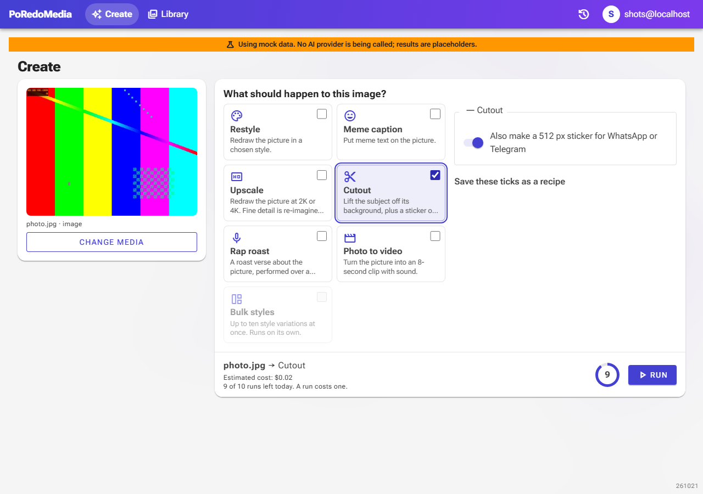
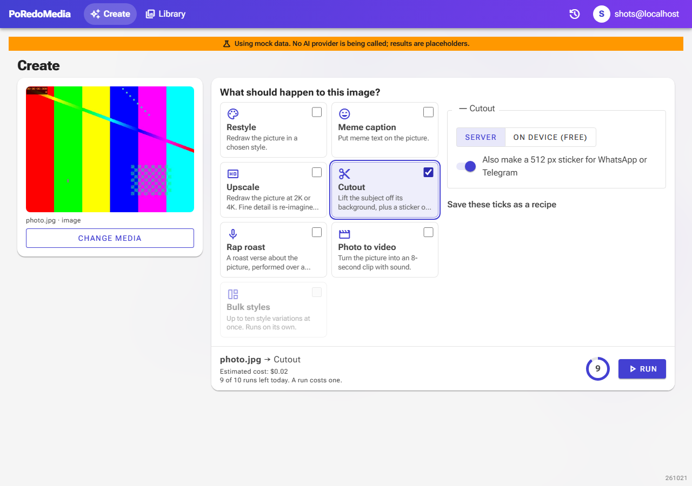
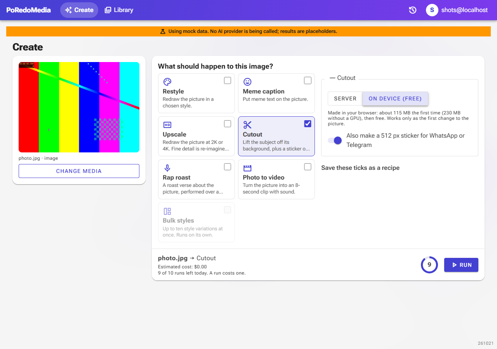
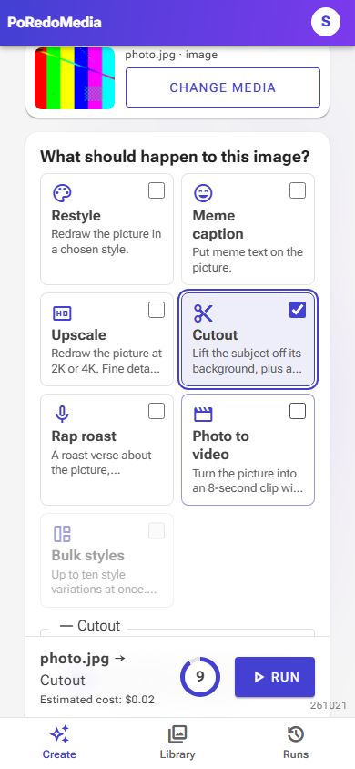
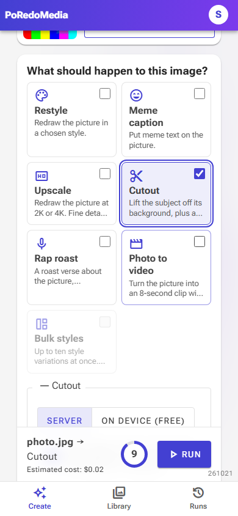
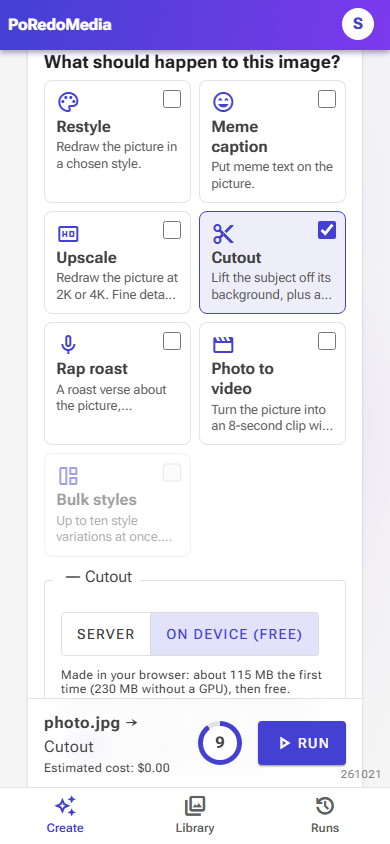

AI pipeline upgrade: the one visible change
A1–A5 and A7–A10 change what happens on the server (lanes, metering, stored reads, one-call roast, whole-clip vision, judged drafts, eval, Gemini frame vision). The only change on screen is A9: Cutout can now be made on the user's own device for free. Captured headless with Playwright in the Test environment (mock AI), with the code before the change on one port and after it on another, the same picture, Cutout ticked.
A9Cutout: Server or On device (free)
The Cutout options get a picker. "On device" runs BiRefNet lite (MIT licence) in the browser through transformers.js, sends the transparent PNG to a signed link under the picture, and the run uses it. The estimate drops to $0.00 for it.






- The choice is remembered with the other options (
Cutout.model). - On device works only as the first change to the picture (before it, Restyle, Meme caption or Upscale would have changed it); the page says so instead of quietly paying for the server remover.
- A first capture showed the note running beside the picker on desktop and "SERVE R" breaking on a phone; the options now stack like the Upscale ones and the label is shorter. These are the fixed captures.
Not visible here: on a device with WebGPU the on-device speech model for captions is now Whisper base instead of tiny; without WebGPU it stays tiny.